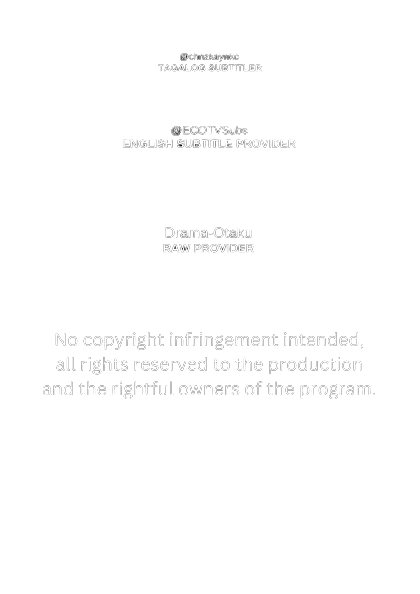

SYNOPSIS
Sa graduation day Class 3-D, tinulak si Rina Kujo ng isa sa kanyang mga estudyante. Ngunit bumalik ng isang taon si Rina Kujo. Dahil sa pagkakataong ito, aalamin niya kung sinong tumulak sa kanya at babaguhin ang buong school!
SUBTITLES AND HARDSUB STREAMING
*Malapit na!
CREDITS
